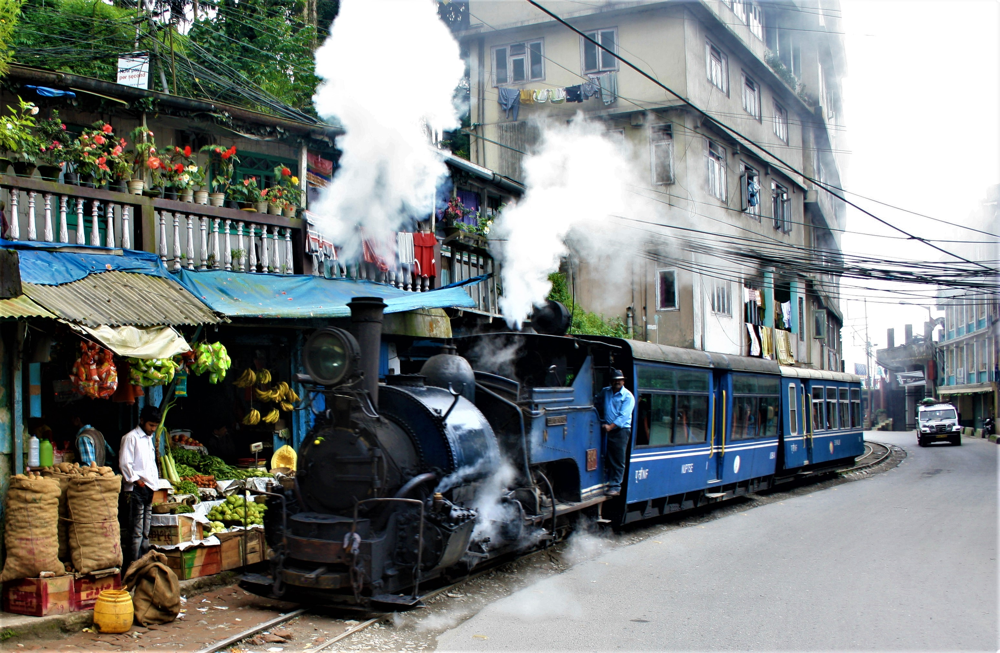

Batasia Loop
A spiral railway created to lower the gradient of ascent of the Darjeeling Himalayan Railway.
💡 It offers a panoramic view of Darjeeling town and snowy Mount Kanchenjunga.

A spectacularly picturesque hill station in the Himalayan foothills known for its sprawling tea estates.
A spiral railway created to lower the gradient of ascent of the Darjeeling Himalayan Railway.
Old Ghoom Monastery is the popular name of Yiga Choeling. The monastery belongs to the Gelukpa or the Yellow Hat sect and is known for its 15 feet-high statue of the Maitreya Buddha

Lamahatta is a serene eco-tourism village located amidst vast stretches of pine forests. It features an incredibly peaceful park with colourful prayer flags fluttering in the mountain breeze.
Beautiful pain forest amidst the could

One of the oldest and most prestigious tea estates in Darjeeling, establishing itself as the world's first tea factory. You can witness the entire process of how world-famous Darjeeling tea is grown, plucked, and processed.

Mirik is renowned for its beautiful, serene Sumendu Lake surrounded by a garden of tall dark Japanese cedars. The view of Kanchenjunga reflected in the lake's water is simply mesmerizing.

A tranquil and beautiful Buddhist monument designed to provide a focus for people of all races to unite in peace.
The highest point in Darjeeling offering a majestic panoramic view of Mount Everest and Mt. Kanchenjunga.